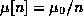
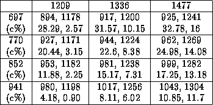

Table 3 shows the detected tones with NDFET implemented on the ADSP-2101. For the implementation, we used an adaptive step size over each

interval of samples, , with .
As shown on Table 3, estimation errors are very high since this
algorithm is not robust in the presence of noise.
Although NDFET is much faster than the Goertzel algorithm, it does not
meet the standard 2(a).
.
As shown on Table 3, estimation errors are very high since this
algorithm is not robust in the presence of noise.
Although NDFET is much faster than the Goertzel algorithm, it does not
meet the standard 2(a).
Table 3: NDFE tests on the ADSP-2101
